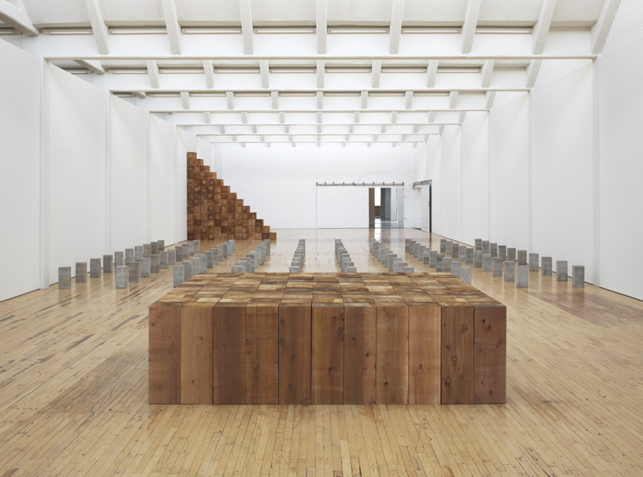
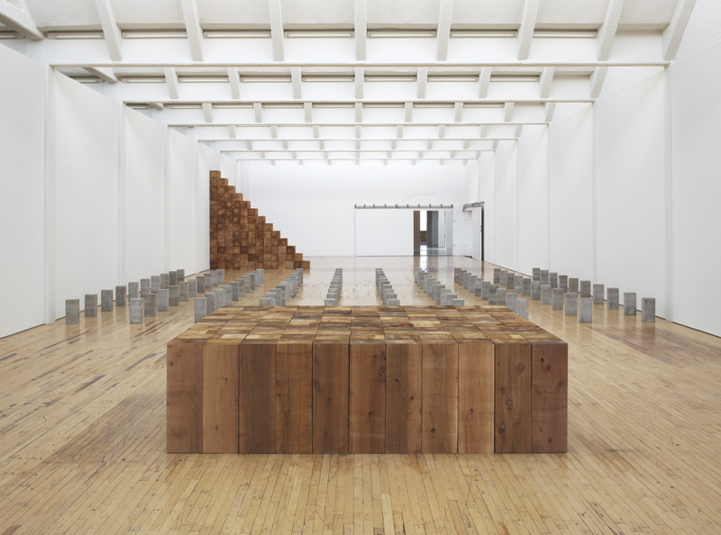
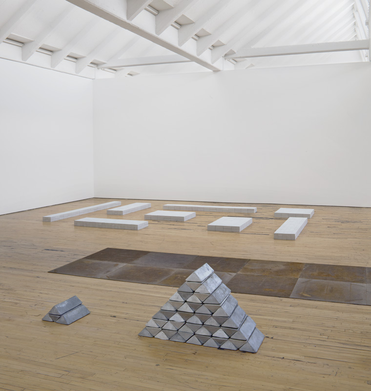
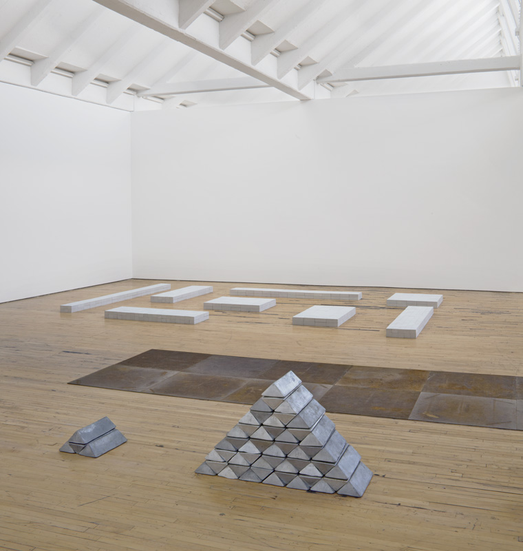

Carl Andre
A minimalist artist. Recognized for his ordered linear format and grid format sculptures. His sculptures range from large public artworks (such as Stone Field Sculpture, in Hartford, CT AND Lament for the Children, in Long Island City, NY) to more intimate title patterns arranged on the floor of an exhibition space (such as 144 Lead Square, 1963 ot Twenty-fifth Steel Cardinal,). In 1988, Andre was tired and axquitted in the death of his wife, artist Ana Menedieta.
 

 
